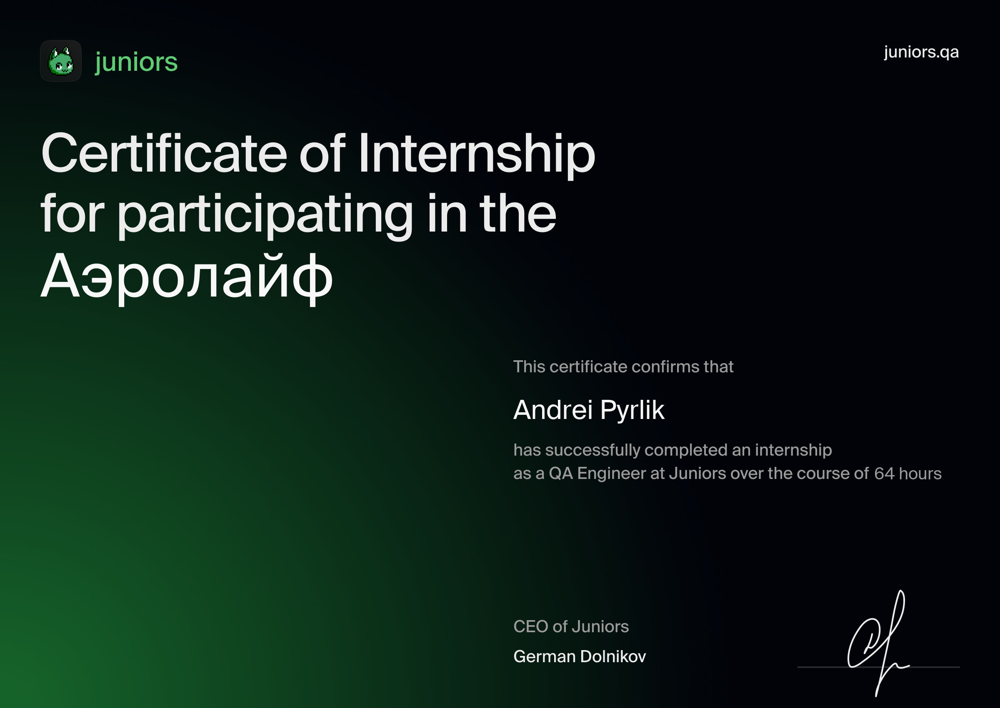

МОЯ СТАЖИРОВКА В АЭРОЛАЙФ
Проект Аэролайф — Системы очистки и обеззараживания воздуха
О проекте
Наша команда была привлечена для тестирования новых функциональных возможностей сайта компании "Аэролайф".
Роли и обязанности
Состав команды:
- QA-тимлид
- Тест-менеджер
- 5 тестировщиков
Основные задачи
Во время стажировки продолжительностью 10 дней (64 часа), наша задача заключалась в следующем:
- Создание чек-листов и тест-кейсов в Miro
- Локализация и создание баг-репортов в Buildin
- Тестирование десктопной версии сайта в различных браузерах (Google Chrome, Safari, Opera, Firefox)
- Проведение функционального и регрессионного тестирования
- Проверка интеграции с административной панелью
- Тестирование API с использованием методов GET, POST, PUT, PATCH, DELETE через Postman и SwaggerUI
Инструменты и технологии
Мы использовали следующие инструменты и технологии:
- Sentry
- TestIT
- Buildin
- DevTools
- Postman
- Miro
- Figma
Итоги и отчетность
По завершении тестирования мы провели итоговую встречу с разработчиками через Google Meet, где представили наши отчёты и зафиксировали выявленные проблемы.
Подробный отчёт доступен по ссылке: Telegram-канал Juniors.QA
